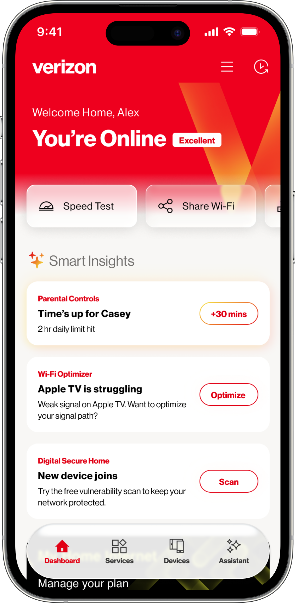
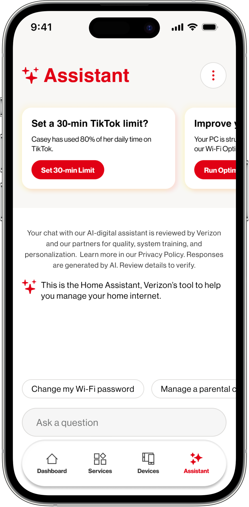
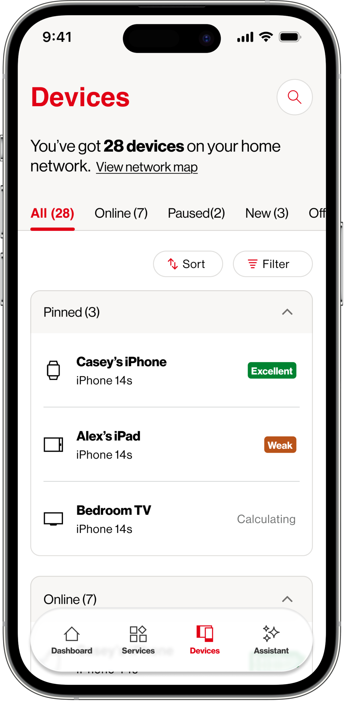
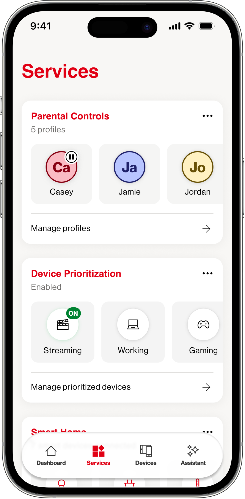

Operational transformation. Leadership. Systems organization. This chapter is about the execution, the unglamorous, high-leverage work of turning fragmentation into infrastructure.
Verizon Home App was a connectivity management tool for home internet customers — router controls, device management, network diagnostics. On paper, everything a customer would need. In practice, a product built to reduce call-center volume, not to serve people.
That one distinction — cost deflection versus customer trust — was embedded in every decision: the information hierarchy, the error states, the onboarding flow. The app was built to make customers stop calling. Not to make them feel capable.
When I joined, there were 1,600+ "app unusable" tickets per release cycle. Teams had tried patching individual screens. Nobody had asked the harder question.
Most products fail because they solve the wrong thing beautifully. I design systems that resolve what matters — not interfaces that mask it.
The app only surfaced when something broke. No ambient presence, no guidance during the calm moments when trust is built.
When the app failed, it gave customers nothing — no context, no next action. Silence reads as incompetence. Support tickets spiked after every release.
Every team solving the same problems in isolation. Without shared components or principles, every sprint added more debt. Incoherent because it was.
My first three weeks weren't in Figma. I sat with support teams, read customer transcripts, audited 18 months of release notes, and met with every PM and engineering lead I could find.
What I found: eleven teams working in parallel, no shared design language, no defined success metric from the customer's perspective, and an AI strategy that existed in a slide deck but had no design tether.
Before design began in earnest, a vision was articulated — directionally right, but without the operational systems to land it. This is that vision.
It's changing how decisions get made. Not just what the decisions are. Here's how I framed my mandate — and how that shaped what I prioritized.
Before a single screen, I aligned leadership around a new north star: shift from "reduce calls" to "build trust." This reframed priorities across PM, engineering, and content simultaneously.
Established cross-functional rituals — design critiques, shared component libraries, joint sprint reviews — that let 11 teams move with coherence instead of just speed.
Defined what AI-enabled experience actually meant: proactive, contextual, never novelty for its own sake. The principle — does this make the right action feel inevitable? If not, it doesn't ship.
Mentored by asking better questions, not giving answers. Established critique rituals that raised craft standards without gatekeeping. The goal was a team that could decide without me.
The order in which I attacked problems was as important as how I solved them. Fix trust first. Build infrastructure before features. Earn the room before redefining it.
Rushing to the AI experience without a stable foundation would have compounded every existing failure. Instead, I sequenced deliberately — and by the time we were ready to introduce intelligence, we had something worth being intelligent about.
Embedded in support, interviewed engineers, audited 18 months of release notes. Built a shared picture of the problem before proposing anything — this credibility lasted years.
Redesigned error states and onboarding before building anything new. Trust is cumulative. One bad moment erases ten good ones. We stopped the bleeding first.
A 900+ component system, cross-platform standards, shared principles. Slowed down initially; by release 4, every team was significantly faster. Accessibility, legal, engineering — all on the same shared language.
With a stable foundation, introduced the AI advisor model — proactive guidance, smart automation. Launched August 2024. 1M+ customers, 4.5 App Store rating.
The design system wasn't a nice-to-have. It was the infrastructure that made everything else possible. Before it existed, 11 teams were solving the same problems 11 different ways.
A single token system spanning light/dark, accessibility states, and brand. Every decision traced to a principle, not a preference.
Atomic components from status chips to full-screen modals — all responsive, all accessible. Reduced design-to-dev time by 85%. Unified iOS, Android, and web.
Systems work when everyone internalizes the principles, not just the components. These anchored every decision across all 11 teams.
Product vision. Ecosystem strategy. AI experience. Household intelligence. The pacing slows here intentionally — this chapter earns the breathing room.
From a Network Utility
to a Trusted
Household Systems Operator
Not simply a connectivity tool. A system capable of understanding, guiding, and supporting the rhythms of the household.
This vision informed the pacing, framing, and strategic arc of everything that followed. Watch before reading.
The Home App needed to serve two stakeholders simultaneously — and the strategy had to make both missions feel like one coherent direction.
Verizon Home App
is not broken.
It is invisible.
Utility products succeed quietly. The most dangerous failure mode isn't crashes or errors — it's forgettability. A product customers never think about is a product they'll leave without hesitation.
These weren't taglines. They were decision filters. Every product decision was tested against them before it advanced.
Utility products succeed quietly. High DAU is not the goal. Meaning per launch is. The app should be worth opening — not designed to be opened often.
Reliability builds emotional trust. The app should reach out when something matters — before the customer notices, before they call support. Proactive is the product.
Not gadget control. We do not compete with smart speakers or device manufacturers. We operate the intelligence layer — the layer they all depend on.
Privacy earns loyalty. Security should protect the household without burdening it. No paranoia. No alerts for non-issues. Competence that's felt, not announced.
Churn prevention is a feeling. The app raises the bar for leaving by being genuinely useful — not by making leaving harder. Subtle loyalty is durable loyalty.
The household is the unit. Not the router, not the device — the household's rhythms, needs, and vulnerabilities are what the system learns to understand.
"I chose Verizon because my home just works, and when it doesn't, someone competent is watching."
Target Customer Sentiment · Design North StarThis is the sentence we designed toward. Not a metric — a feeling. Every pillar, every feature, every product decision was stress-tested against it.
The "what it excludes" column is as important as what's included. Strategic restraint is a design skill. Boundaries that are explicit are boundaries that hold.
The distinction between churn reduction, trust preservation, and cost-to-serve reduction is not semantic. Each metric tells a different story about what the product is actually doing for the business.
Measured as reduced likelihood — not prevented events. The app raises the bar for leaving.
Measured via 4.5★ rating, CSAT, and support ticket trends. Trust compounds differently than engagement.
71% fewer "app unusable" tickets. Self-service recovery reduces call-center load and support costs.
"The Home App does not prevent churn.
It raises the bar for leaving."
The original navigation was organized around features. The redesign is organized around user intent. Four clear entry points — each scoped to a distinct household need — replacing an overloaded flat list.
Before: Flat feature list organized by capability — settings, diagnostics, billing, devices all at the same level. No clear hierarchy. No user goal in sight.
Every support call that started with "I couldn't find…" was a navigation failure wearing a design mask.
After: Four intent zones, each serving a distinct mindset. The AI assistant lives inside Home — surfacing when it has something relevant, not as a permanent modal.
The restructure reduced task completion time by an average of 34% in usability testing across the primary five workflows.
Every screen here is the output of a strategic decision made upstream. The UI is the last 10% — the part customers see. Here's the 90% that made it worth building.
The original home screen was a list of settings. It told customers their router was connected. It never told them anything actionable or useful.
The redesign centers around three zones: network health at a glance, an AI insight card surfacing the most relevant action for that customer right now, and quick access to the tasks they return to most often.
Design decision: The AI card gets prime real estate — above the fold, above everything. Because if we're repositioning this product as an advisor, the advice needs to be the first thing you see.

The AI strategy existed as a slide deck. It had no design expression — no answer to "what does this actually look like, feel like, or say?" My job was to give it one.
The Advisor is not a chatbot. It's a contextual intelligence layer that monitors network health, usage patterns, and device behavior to surface the right insight at the right moment — in plain language, with a clear next action.
Design principle: AI earns trust through restraint. One well-timed insight beats ten generic ones. We established a strict relevance threshold — if an insight doesn't change what a customer would do, it doesn't surface.

Not a list of MAC addresses. A named, organized map of every device in the home — each one understood in context of the household's needs.
Parents set schedules. Guests get isolated access. Security alerts are contextual and actionable. The system knows which devices matter most and treats them accordingly.
Strategic scope: We deliberately excluded smart home device control (thermostats, locks, etc.). Verizon owns the network layer — adding smart home control would create a competitive conflict without adding strategic value.

The Services view makes plan benefits visible without upsell pressure. Customers see what they have, what's available, and how to use it — without feeling hunted.
The AI assistant prototype below shows the interaction model in motion — how the advisor surfaces, frames, and resolves a household insight without demanding attention.

The AI assistant is the product's most strategically important surface — and the one most likely to be built wrong. Most AI features in utility products are novelty: a chatbot that answers questions nobody was asking, a widget that surfaces data without context.
The Home Advisor is designed around a different model: contextual intelligence that earns the right to surface. It only appears when it has something genuinely useful to say. It frames issues in household language, not network jargon. And it always ends with a clear, optional action — never a demand.
The constraint that shaped everything: every insight must pass the "would I say this to a homeowner?" test. If a Verizon technician wouldn't walk up to your door and say it, the AI doesn't surface it.
"Restraint is the feature. One well-timed, genuinely helpful insight builds more trust than ten correct but low-value ones."
"The advisor speaks in household terms, not network terms. 'Your evening video calls may be slower' — not 'upstream packet loss detected on port 8080.'"
"The app becomes a household advisor. Not a utility dashboard. Not a feature list. An advisor."
The metrics that matter aren't just the ones on a dashboard. A 4.5 App Store rating means customers chose to say something positive, unprompted. That's trust. That's the product.
"This designer can operate at every layer simultaneously:
execution, systems, operations, product strategy,
organizational alignment, and future-state experience vision."
Design Goal · Verizon Home App
From chaos to cadence — redesigning enterprise video collaboration at scale.